Problem of the Month (February 2017)
Consider n non-overlapping triangles with sides 2, 2, and 1, where these triangles are connected in a chain where each consecutive pair share an entire side. What is the smallest circle they will fit into? The smallest square?
ANSWERS
Submissions were received from George Sicherman, Joe DeVincentis, Mark Mammel (MM1), and Berend van der Zwaag, and Maurizio Morandi (MM2)
Triangle Chains in Circles
n=1
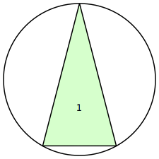
r=1.0327+
| n=2
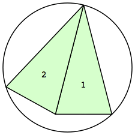
r=1.1428+
| n=3
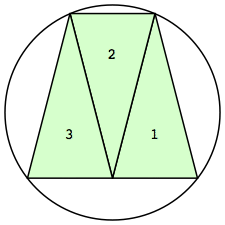
r=1.2649+
| n=4

r=1.3919+
|
n=5
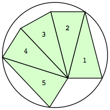
r=1.5329+
| n=6
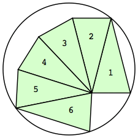
r=1.7068+
| n=7
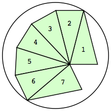
r=1.9062+
| n=8
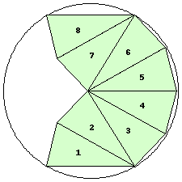
r=1.9675+ (JD)
|
n=9
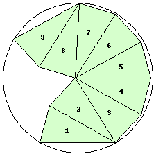
r=1.9814+ (JD)
| n=10

r=1.9973+
| n=12
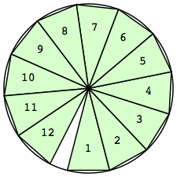
r=2
| n=13
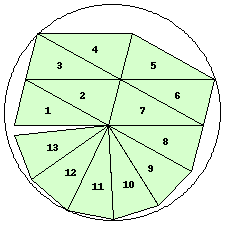
r=2.2840+ (JD)
|
n=14
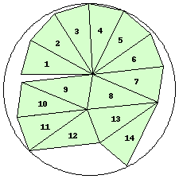
r=2.4131+ (JD)
| n=15
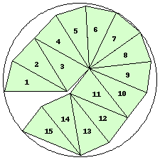
r=2.4534+ (JD)
| n=16
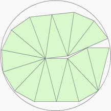
r=2.4843+ (MM1)
| n=17
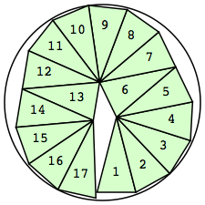
r=2.5245+
|
n=18
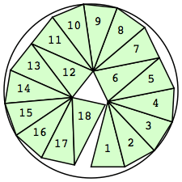
r=2.5756+
| n=19
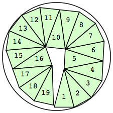
r=2.7231+
| n=20
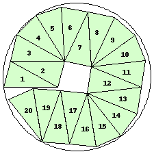
r=2.7242+ (JD)
| n=21
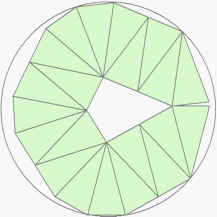
r=2.8697+ (MM1)
|
n=22
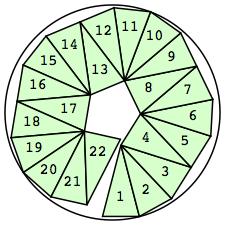
r=2.9180+
| n=23
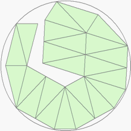
r=2.9957+ (MM1)
| n=24
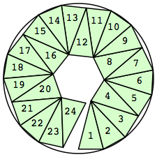
r=3.0110+
| n=25
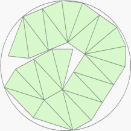
r=3.1064+ (MM1)
|
n=26
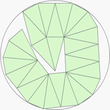
r=3.1294+ (MM1)
| n=27
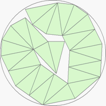
r=3.1944+ (MM1)
| n=28
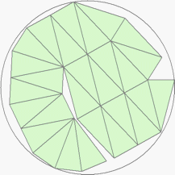
r=3.2373+ (MM1)
| n=29
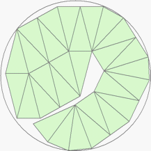
r=3.2582+ (MM1)
|
n=30
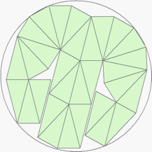
r=3.3432+ (MM1)
| n=31
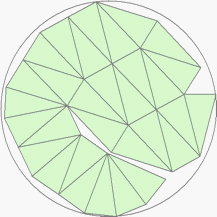
r=3.3780+ (MM1)
| n=32
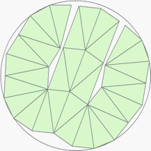
r=3.3820+ (MM1)
| n=33
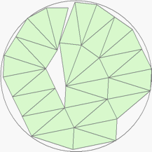
r=3.4692+ (MM1)
|
n=34
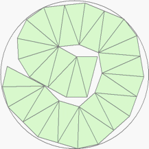
r=3.5356+ (MM1)
| n=44

r=3.9388+ (MM2)
| n=45
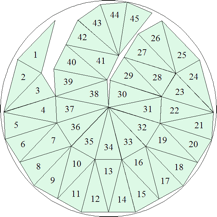
r=3.9849+ (MM2)
| n=46

r=3.9988+ (MM2)
|
n=48
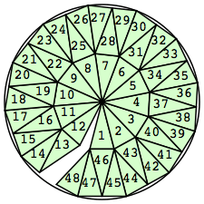
r=4
|
Triangle Chains in Squares
n=1
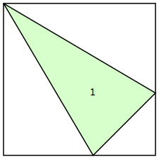
s=1.7228+
| n=2
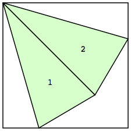
s=1.9220+
| n=3
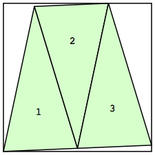
s=1.9982+
| n=4
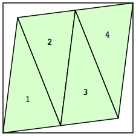
s=2.2360+
|
n=5
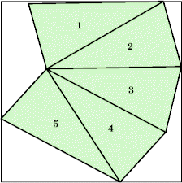
s=2.6743+ (GS)
| n=6
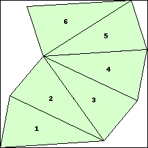
s=2.8256+ (JD)
| n=7
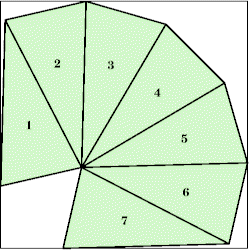
s=2.9739+ (GS)
| n=8
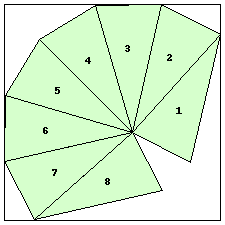
s=3.2842+ (JD)
|
n=9
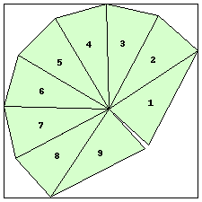
s=3.6639+ (JD)
| n=10

s=3.6914+ (JD)
| n=11
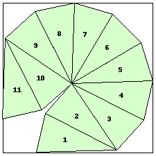
s=3.7186+ (JD)
| n=12
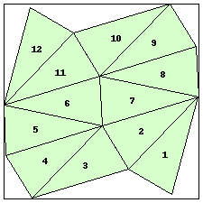
s=3.8695+ (JD)
|
n=13
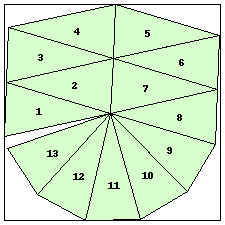
s=3.9438+ (JD)
| n=14
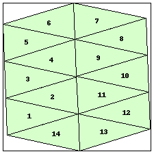
s=3.9964+ (JD)
| n=16
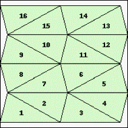
s=4.2500 (BZ)
| n=17
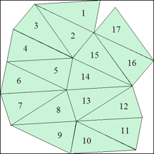
s=4.6490+ (MM2)
|
n=18
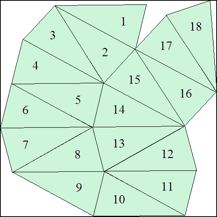
s=4.6812+ (MM2)
| n=19
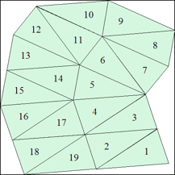
s=4.7853+ (MM2)
| n=20
s=4.8412+ (JD)
| n=21
s=4.9714+ (JD)
|
n=22
s=5.0832+ (JD)
| n=23
s=5.3253+ (JD)
| n=24
s=5.3597+ (JD)
|
If you can extend any of these results, please
e-mail me.
Click here to go back to Math Magic. Last updated 3/1/17.